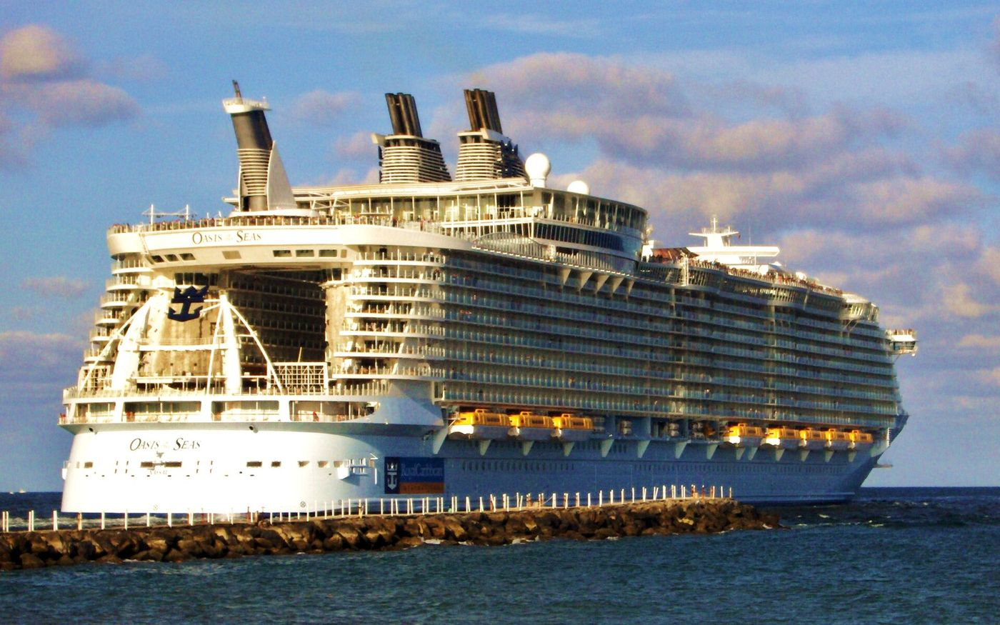

Today · Thursday
At sea, North Atlantic
Thu Nov 5, 2026: a sea day aboard Odyssey of the Seas, Day 12 of the 14-night Spain & Portugal transatlantic sailing from Civitavecchia (Rome) to Cape Liberty (reservation 2926567, Junior Suite J4 10234), mid-crossing in the North Atlantic and bound for Cape Liberty. Tomorrow (Fri Nov 6) is another sea day, Day 13.
Tomorrow Fri Nov 6 — Cruising: a sea day aboard Odyssey of the Seas, Day 13 of the transatlantic.
This trip, day by day — read the journal so far

Next stopCape Liberty (Bayonne), New Jersey
40.67° N74.11° W